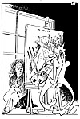

|
Dagens Inge:  Inge-galleri Tidligere artikler |
Dagens ledere Morgen: Nede for telling Bekreftet |
Aften: Parkerings- strid i Ap. |
|
Kommentar Den nye norske virkeligheten GODT KORT: Årets eventyrlige sildefangster bekrefter at vi har forvaltet våre fiskeressurser til beste for alle parter. LARS HELLBERG Artikkelforfatteren er politisk kommentator i Aftenposten.
"Partiets yndling" og hans enke
|
I dag Toppidrett BRØD OG SIRKUS: Vår tids gladiatorer har et levebrød som i farlig grad går på helsen løs. EGIL ALNÆS Dr. med.
| |
|
Kronikk Internasjonalisering i historiefaget JARLE SIMENSEN Historiefaget i Norge har vært ensidig sentrert om norske emner. Etter 1945 har det endog vært en markant nedgang i antallet arbeider fra europeisk historie. En viktig motvekt er det stipendieprogrammet som Ruhrgas har finansiert gjennom de siste ti år, med Ruhrgas-sjef Klaus Liesen som drivende kraft. Professor Jarle Simensen skriver om utbyttet av de norsk-tyske kontakter, som belyses under et møte i Munch-museet i kveld.
|
||